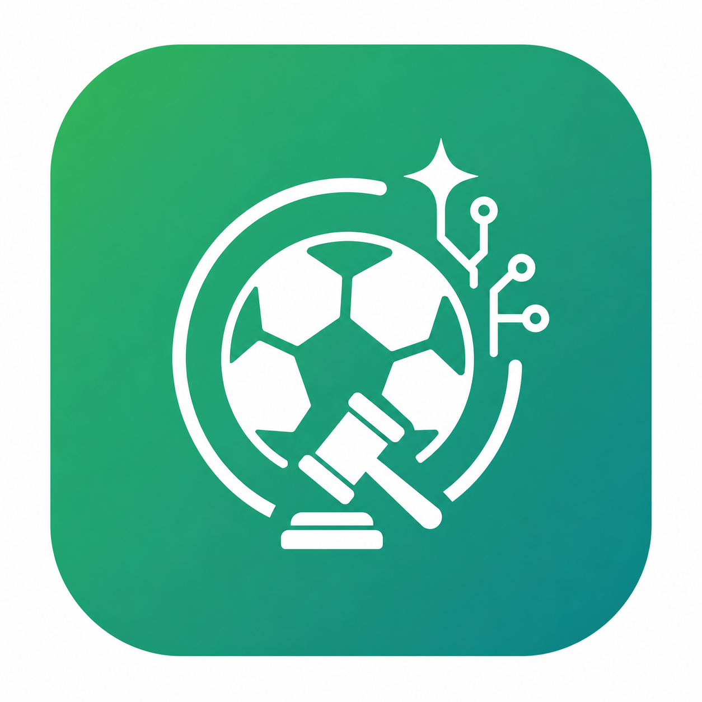
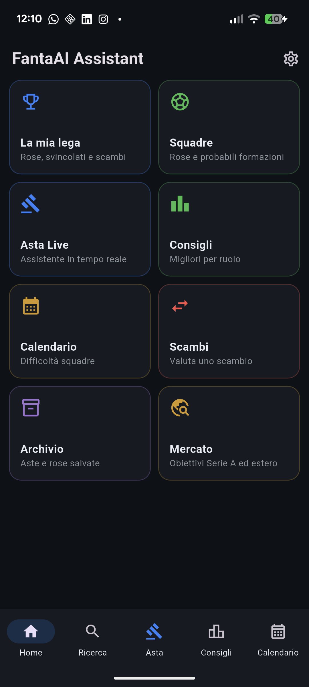

Asta live e ottimizzazione
Registra ogni acquisto, ricalcola il budget e costruisce una rosa realistica considerando partecipanti, giocatori già presi e prezzi massimi.
PDCA500 cr

FantAI Presto su Google PlayFantAI trasforma listone, budget, titolarità, bonus, calendario e rose avversarie in decisioni concrete. Prima, durante e dopo l’asta.

Non una semplice lista di nomi: FantAI comprende la tua lega e aggiorna i consigli mentre l’asta cambia.
Registra ogni acquisto, ricalcola il budget e costruisce una rosa realistica considerando partecipanti, giocatori già presi e prezzi massimi.
Valuta il beneficio per te e per l’avversario, confrontando carenze, età, bonus e titolarità.
Misura giornata per giornata la forza della tua rosa rispetto all’avversario.
FVS, fasce, pro e contro, rigoristi, titolari e occasioni di mercato sempre leggibili.
Acquisti, cessioni ufficiali e voci live incrociate da più fonti.
Importa le leghe disponibili, le squadre, i partecipanti, le rose e il calendario.
Indica la tua squadra e FantAI prepara automaticamente il contesto corretto.
Usa asta live, ottimizzazione, consigli, formazione e valutazione scambi.
FantAI conserva una cache locale: l’app si apre subito e continua a funzionare anche senza connessione. Gli aggiornamenti completi non bloccano ogni apertura.
FantAI sarà pubblicata prossimamente su Google Play. Questa pagina verrà aggiornata con il collegamento ufficiale.
Serve per il primo accesso e per aggiornare listone, leghe e mercato. Dopo la sincronizzazione, gran parte dell’app funziona dalla cache locale.
No. FantAI è uno strumento indipendente e non è affiliato o approvato da Fantacalcio.it.
FantAI arriverà a breve su Google Play.